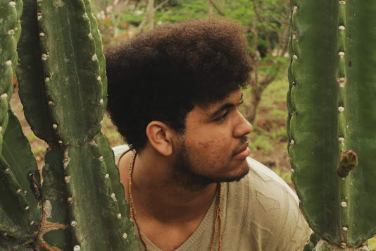

Sobre mim
Eu nasci e me criei em garanhuns, Sou filho de artista e de professora, formei minhas ideias e convicções nesses meios. Contudo, sempre tive interesse pela área da computação pelo lado de meu tio, que trabalha nessa área há muito tempo. O tomando como inspiração, me inscrevi no curso técnico de Informática do IFPE de minha cidade,mas sempre mantive meu interesse pela arte e cultura. Ao longo do meu trajeto no campus, me aventurei sempre por projetos de pesquisa e extensão nos âmbitos de patrimônio cultural, culinária quilombola, leis de ações afirmativas identitárias e até mesmo como vocalista da Banda do campus. Embora seguindo firme e nunca deixando de trabalhar nos estudos do curso, admito ter sido levado em alguns momentos mais por essas esferas dos projetos. Porém, com a vinda da Pandemia e o foco voltando mais para o ensino a distância juntamente de um ensino consequentemente mais pessoal e em alguns casos auto-didata pude me encantar ainda mais com a área da Programação, com a força dessa comunidade e me senti ainda mais abraçado por esse meio, focando ainda mais no meu desenvolvimento no ramo desde então. Entre meus interesses e áreas de conhecimento pude estudar java, banco de dados, redes, javascript e diversos outros conteúdos, mas me interessei sobretudo pela Área WEB, cujo tenho focado com mais afinco ultimamente. Sinto que todos os conhecimentos que tenho fora da área que pude executar e ainda o faço como produtor cultural, não se é perdido, mas ressignificado como qualidades ao profissional que almejo me tornar, seja nas relações interpessoais, nas formas de analisar o valor humano de projetos e como atingir cada vez mais soluções que possam não apenas transformar e melhorar organizações, mas resolver problemas e mudar a vida das pessoas dentro e fora delas.
Conheça o meu Portfólio: Github